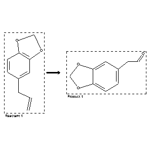

|  |
| FA | RX(1); FLST(1); RX(3) |
Reaction (1 of 1)
| Reaction ID | 132201 |
| Reactant BRN | 136380 |
| Reactant | 5-allyl-benzo[1,3]dioxole |
| Product BRN | 7729 |
| Product | benzo[1,3]dioxol-5-yl-acetaldehyde |
| No. of Reaction Details | 3 |
Reaction Details (1 of 1)
| Reaction Classification | Preparation |
| Reagent | ozone; carbon tetrachloride; chloroform |
| Other Conditions | weiteres Reagens: Petrolaether; Zersetzung des Ozonids durch Ruehren seiner Loesung in Eisessig mit Wasser und Zinkstaub |
| Comment | Handbook |
| Citation Pointer | 507360; Journal; Nagai; J. Fac. Eng. Tokyo Univ.; 13; 185; CHZEA6; Chem.Zentralbl.; GE; 94; III; 1923; 750; |
Reaction Details (2 of 1)
| Reaction Classification | Preparation |
| Reagent | acetic acid ester; ozone |
| Other Conditions | Man behandelt das entstandene Ozonid in Essigester und Aether mit Zinkstaub und Essigsaeure |
| Comment | Handbook |
| Citation Pointer | 500505; Journal; Harries; Adam; CHBEAM; Chem.Ber.; 49; 1916; 1029;500803; Journal; Semmler; Bartelt; CHBEAM; Chem.Ber.; 41; 1908; 2752; |
Reaction Details (3 of 1)
| Reaction Classification | Preparation |
| Reagent | 1.) O3/O2, 2.) Zn, CH3COOH |
| Other Conditions | 1.) CH3COOH, 0 deg C, 2.) 0 deg C, 2 h |
| Comment | Yield given. Multistep reaction |
| Citation Pointer | 5833049; Journal; Barreiro, Eliazer J.; Costa, Paulo R. R.; Coelho, Fernando A. S.; Farias, Florence M. C. de; JRMPDM; J.Chem.Res.Miniprint; EN; 7; 1985; 2301-2332; |
Reference (1 of 4)
| Citation Number | 500505 |
| Document Type | Journal |
| Authors | Harries; Adam |
| CODEN | CHBEAM |
| Journal Title | Chem.Ber. |
| (Series) Volume | 49 |
| Publication Year | 1916 |
| Page | 1029 |
Reference (2 of 4)
| Citation Number | 500803 |
| Document Type | Journal |
| Authors | Semmler; Bartelt |
| CODEN | CHBEAM |
| Journal Title | Chem.Ber. |
| (Series) Volume | 41 |
| Publication Year | 1908 |
| Page | 2752 |
Reference (3 of 4)
| Citation Number | 507360 |
| Document Type | Journal |
| Authors | Nagai |
| CODEN | CHZEA6 |
| Journal Title | Chem.Zentralbl. |
| Journal/Review Without CODEN | J. Fac. Eng. Tokyo Univ. |
| Language Code | GE |
| (Series) Volume | 13; 94 |
| Number | III |
| Publication Year | 1923 |
| Page | 185; 750 |
Reference (4 of 4)
| Citation Number | 5833049 |
| Document Type | Journal |
| Authors | Barreiro, Eliazer J.; Costa, Paulo R. R.; Coelho, Fernando A. S.; Farias, Florence M. C. de |
| CODEN | JRMPDM |
| Journal Title | J.Chem.Res.Miniprint |
| Language Code | EN |
| Number | 7 |
| Publication Year | 1985 |
| Page | 2301-2332 |